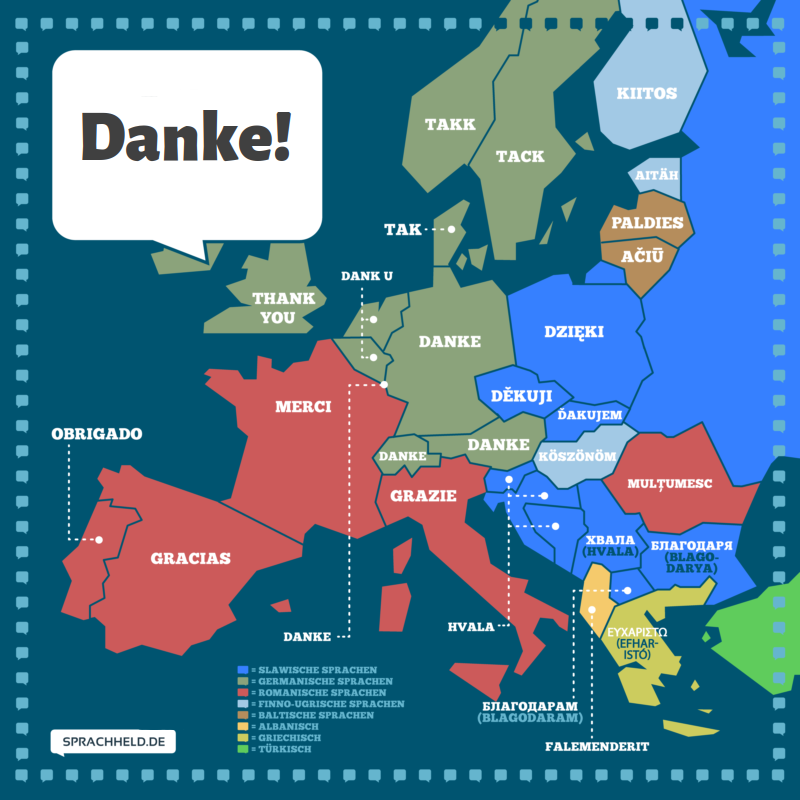

# Zeta and Company: Measures of Distinctiveness for Computational Literary Studies </img> <br/><br/> **Christof Schöch with Julia Dudar and Keli Du** <br/> *** SPP CLS General Meeting, May 31, 2022 <br/>https://zeta-project.eu/en/ *** <img data-src="img/basics/dfg-logo.jpg" height="30"></img> <img data-src="img/basics/tcdh-slim.png" height="35"></img> <img data-src="img/basics/uni-trier.png" height="35"></img> <img data-src="img/basics/spp2207.png" height="40"></img> :: - Very nice to be here, in person even! - Welcome to this first presentation - I present today, but of course all of this is teamwork - Particularly greatful to Julia Dudar and Keli Du -- ### Overview 1. [Zeta and Company: So far](#/2) 1. [Zeta and Company: Next steps](#/3) 1. [Zeta and Company: Beyond Words](#/4) :: - I will talk about the project in three simple steps; - basically, past, present and future. -- ## (2) Zeta and company:<br/>So far --- ### Key objectives * Algorithmically support a key strategy in the Humanities: comparison<br/>(e.g. Comp. Lit., SFB 1288 Praktiken des Vergleichens, Klimek/Müller 2015) <!-- .element: class="fragment fade-in-then-semi-out" data-fragment-index="1" --> * Model, implement, evaluate and use a wide range<br/>of measures of distinctiveness or keyness <!-- .element: class="fragment fade-in-then-semi-out" data-fragment-index="2" --> * Use one shared implementation, to enable meaningful comparison <!-- .element: class="fragment fade-in-then-semi-out" data-fragment-index="3" --> * Use reference datasets relevant to CLS: subgenres of the novel <!-- .element: class="fragment fade-in-then-semi-out" data-fragment-index="4" --> * Outcome: Descriptions and recommendations for use of such measures <!-- .element: class="fragment fade-in-then-semi-out" data-fragment-index="5" --> :: - AVL: Comparative Literature - SFB 1288: "Praktiken des Vergleichens" in Bochum --- ### Corpus building: French Novel * Contemporary French novels, ca. 1950-2000 <!-- .element: class="fragment fade-in-then-semi-out" data-fragment-index="1" --> * 1300+ novels digitized (scan, OCR, XML) so far <!-- .element: class="fragment fade-in-then-semi-out" data-fragment-index="2" --> * current balanced reference set: 2x4x40=320 novels <!-- .element: class="fragment fade-in-then-semi-out" data-fragment-index="3" --> * rapid growth through targeted closing of gaps <!-- .element: class="fragment fade-in-then-semi-out" data-fragment-index="4" --> --- ### Derived formats <img data-src="img/derived.png" height="300"> <!-- .element: class="fragment data-fragment-index="2" --> https://github.com/Zeta-and-Company/derived-formats * Token-level linguistic annotation <!-- .element: class="fragment fade-in-then-semi-out" data-fragment-index="1" --> * Segment-wise sequence randomization (50 tokens) <!-- .element: class="fragment fade-in-then-semi-out" data-fragment-index="2" --> * Useable for Stylometry, Topic Modeling, Distinctiveness <!-- .element: class="fragment fade-in-then-semi-out" data-fragment-index="3" --> :: - Incipit von Sortie d'usine im Original: "Une gare s'il faut situer, laquelle n'importe il est tôt, sept heures un peu plus, c'est nuit encore." --- ### Implementation: pydistinto (DHd2022) <img data-src="img/pydistinto.png" height="300"> <img data-src="img/pydistinto-implementation.png" height="300"> https://github.com/Zeta-and-Company/pydistinto * Shared conceptual model for all measures <!-- .element: class="fragment fade-in-then-semi-out" data-fragment-index="1" --> * Currently implements 9 measures (frequency, distribution, dispersion) <!-- .element: class="fragment fade-in-then-semi-out" data-fragment-index="2" --> * Many parameters: features, segment length, measure, etc. <!-- .element: class="fragment fade-in-then-semi-out" data-fragment-index="3" --> --- ### Testing Zeta and Eta (CHR 2021) <img data-src="img/zeta-eta.png" height="250"> * Zeta (Burrows) and Eta (based on Gries) <!-- .element: class="fragment fade-in-then-semi-out" data-fragment-index="1" --> * Eta tends to identify more specific / specialized vocabulary <!-- .element: class="fragment fade-in-then-semi-out" data-fragment-index="2" --> * The longer the segments are, the stronger this difference becomes <!-- .element: class="fragment fade-in-then-semi-out" data-fragment-index="3" --> --- ### Evaluation: classification task (CCLS 2022) <img data-src="img/jcls.png" height="320"> <a href="img/jcls-fig4.png"><img data-src="img/jcls-fig4.png" height="320"></a> <br/> <br/> * Key result: dispersion and distribution-based measures are in some constellations preferable to frequency-based measures <!-- .element: class="fragment fade-in-then-semi-out" data-fragment-index="1" --> :: - Our talk takes place on Wednesday, June 1st, session 2 (2:45-4:15pm). --- ### Theorizing about Evaluation (JLT 2021) <br/> <br/> * It's a mistake to use a given measure to define distinctiveness <!-- .element: class="fragment fade-in-then-semi-out" data-fragment-index="1" --> * A qualitative understanding and explication is required first <!-- .element: class="fragment fade-in-then-semi-out" data-fragment-index="2" --> * This provides the reference for quantitative evaluation <!-- .element: class="fragment fade-in-then-semi-out" data-fragment-index="3" --> -- ## (3) Zeta and company:<br/>Next steps --- ### Summary * Evaluation with synthetic texts and artificial features <!-- .element: class="fragment fade-in-then-semi-out" data-fragment-index="1" --> * Replication of "uniformity of p-values" test <!-- .element: class="fragment fade-in-then-semi-out" data-fragment-index="2" --> * Application study (French contemporary novel) <!-- .element: class="fragment fade-in-then-semi-out" data-fragment-index="3" --> --- ### Evaluation with synthetic texts * 320 synthetic texts: <!-- .element: class="fragment fade-in-then-semi-out" data-fragment-index="1" --> * randomly-selected, linguistically-annotated words * subgenre-neutral texts of different lengths * Evaluation strategy <!-- .element: class="fragment fade-in-then-semi-out" data-fragment-index="2" --> * Introduce additional, artificial tokens with predetermined frequency and dispersion * Check which measures identify the right tokens from the noise --- ### Uniformity of p-values Lijffijt et al. 2014: "Significance testing of word frequencies in corpora", DSH. --- ### Application study * Apply 1-2 robust but different measures to the French novel corpus <!-- .element: class="fragment fade-in-then-semi-out" data-fragment-index="1" --> * Research questions <!-- .element: class="fragment fade-in-then-semi-out" data-fragment-index="2" --> * How much can be said about the subgenres based on the results? * What contribution to a qualitative evaluation does this yield? -- ## (4) Zeta and company:<br/>Beyond Words --- ### Overall objective * To establish a (meaningful, interpretive) relationship between: <!-- .element: class="fragment fade-in-then-semi-out" data-fragment-index="1" --> * semantic features that are (statistically speaking) distinctive of specific (literary) subgenres and * an explicit, detailed understanding of the characteristic properties of (literary) subgenres --- ### More corpora * Larger corpus of French contemporary novels <!-- .element: class="fragment fade-in-then-semi-out" data-fragment-index="1" --> * 'Gutenberg Fiction' corpus (~15.000 narratives) <!-- .element: class="fragment fade-in-then-semi-out" data-fragment-index="2" --> * Corpus of Contemporary American English (COCA) <!-- .element: class="fragment fade-in-then-semi-out" data-fragment-index="3" --> :: - Gutenberg fiction: similar subgenres, more texts, English-language - COCA: strongly balanced, includes a "fiction" category --- ### Features and measures * More complex features <!-- .element: class="fragment fade-in-then-semi-out" data-fragment-index="1" --> * multi-word units * semantic features * semantically-defined multi-word units * => How do the established measures perform with such features? <!-- .element: class="fragment fade-in-then-semi-out" data-fragment-index="2" --> --- ### Explicit model of subgenres * Analyse research literature on subgenres <!-- .element: class="fragment fade-in-then-semi-out" data-fragment-index="1" --> * Derive repeatedly-mentioned, fine-grained, descriptive<br/>profiles of subgenres <!-- .element: class="fragment fade-in-then-semi-out" data-fragment-index="2" --> * themes * plot / motives * character types * settings * language / style * etc. * Use these profiles as reference for evaluation <!-- .element: class="fragment fade-in-then-semi-out" data-fragment-index="3" --> * Test hypotheses for semantics associated with aspects of the profiles * Annotate word lists for aspects of the profiles -- ### Conclusion / Thank you!  <!-- .element: class="fragment fade-in-then-semi-out" data-fragment-index="1" --> :: - So this is really it: I hope to have shown where we stand in the Zeta and Company project: - What we have done, what we are going to do next, what we would love to do in the second phase of the project - Thank you! --- ### References <small> * **References** * Keli Du, Julia Dudar, Christof Schöch: “Evaluation of measures of distinctiveness: Classification of literary texts on the basis of distinctive words”. 1st Annual Conference for Computational Literary Studies. Darmstadt, June 1-2, 2022. – URL: https://jcls.io/site/conference/. * Keli Du, Julia Dudar, Cora Rok, Christof Schöch. “Kontrastive Textanalyse mit pydistinto – Ein Python-Paket zur Nutzung unterschiedlicher Distinktivitätsmaße” [Poster]. In: DHd 2022 Kulturen des digitalen Gedächtnisses. 8. Tagung des Verbands “Digital Humanities im deutschsprachigen Raum” (DHd2022), hg. Michaela Geierhos, Peer Trilcke, Ingo Börner, Sabine Seifert, Anna Busch und Patrick Helling. Potsdam, 2022. DOI: 10.5281/zenodo.6327966. * Keli Du, Julia Dudar, Cora Rok, Christof Schöch: “Zeta & Eta: An Exploration and Evaluation of two Dispersion-based Measures of Distinctiveness”. Computational Humanities Research 2021 (CHR2021). 17-19 Nov 2021, online. http://ceur-ws.org/Vol-2989/short_paper11.pdf * Julian Schröter, Keli Du, Julia Dudar, Cora Rok, Christof Schöch: “From Keyness to Distinctiveness. Triangulation and Evaluation in Computational Literary Studies”. Journal of Literary Theory 15/1-2, 2021, 81-110. DOI: 10.1515/jlt-2021-2011. * Keli Du, Julia Dudar, Cora Rok, Christof Schöch: “Inspecteur, embrasser, planète, Paris. Distinktivitätsmaße für die Analyse literarischer Subgenres. Interpretierbarkeit, Generalisierbarkeit, Erkenntniswert”. Sektion Digital, global, transdisziplinär: Impulse für eine transdisziplinäre Digitale Romanistik , org. Jan Rohden, Nanette Rißler-Pipka, José Calvo Tello, Romanistentag 2021, 4-7 Oct 2021. * **Links** * Slides: https://Zeta-and-Company.github.io/gm2022/ * Licence: [Creative Commons Attribution 4.0 International (CC BY)](https://creativecommons.org/licenses/by/4.0/) </small>